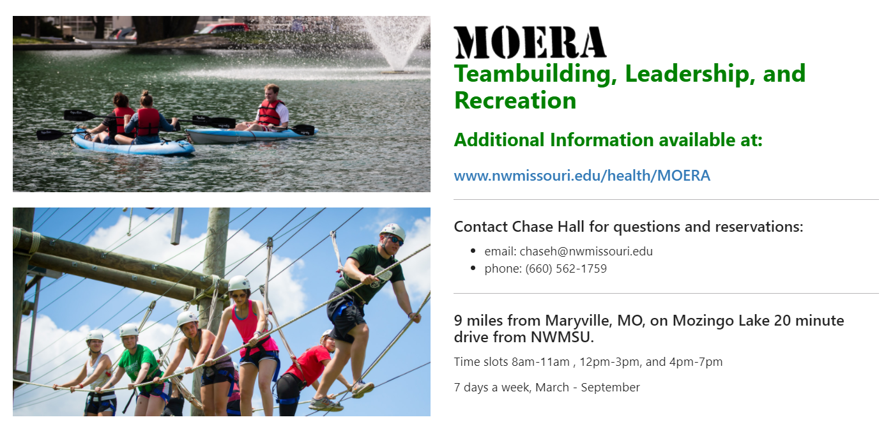
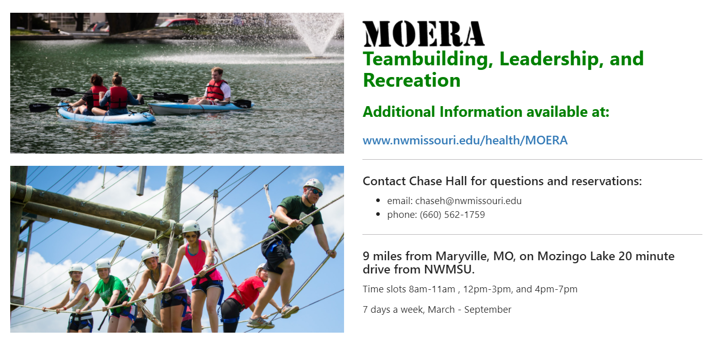

Marketplace Mall Project
Project Scope
I was tasked by my supervisor to create a webpage that could host all of the student body's stores in one place. The goal was to create a professional looking hub that the student body could access and find campus events and stores.
What I learned
I learned several different web development techniques while creating the Marketplace Mall. First, I learned how to create custom styling sheets so that the webpage would follow my University's marketing guidelines. Second, I learned how to navigate around a content management system and work with existing templates. I also gained experience in Adobe Photoshop creating custom store thumbnails.
Most Proud Of
I love that I was able to help my University using my talents in frontend development. I felt a huge sense of fulfillment knowing that I - in some small way - helped my University with developing a website that the student body will continue to use in the future. I am also proud of myself for quickly learning how to navigate around a complex content management system called Touchnet Marketplace.
Go Back to Projects Visit The Marketplace Mall